Malvinas: pasado, presente y futuro en nuestra escuela
Reflexiones y producciones del Área de Educación Científica y Tecnológica, en conmemoración del 2 de Abril.
Por Alumnos y docentes · Educación Científica y Tecnológica · Sede: ESRN Rural Virtual · · Proyectos
i
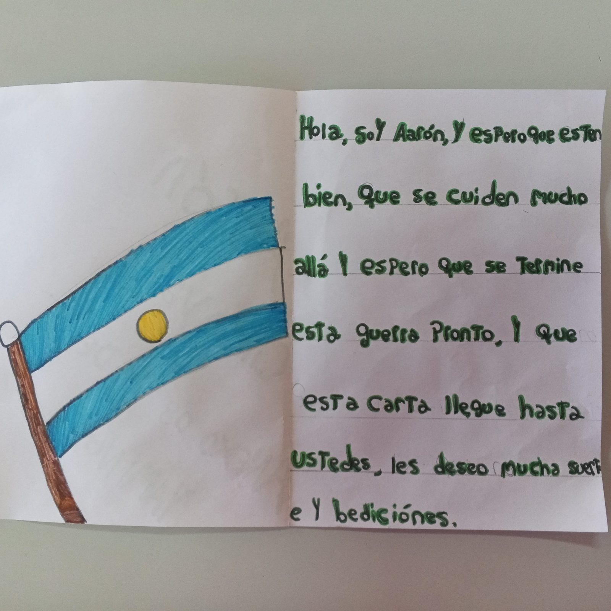
Aáron Chicaval.3 año-Yaminue
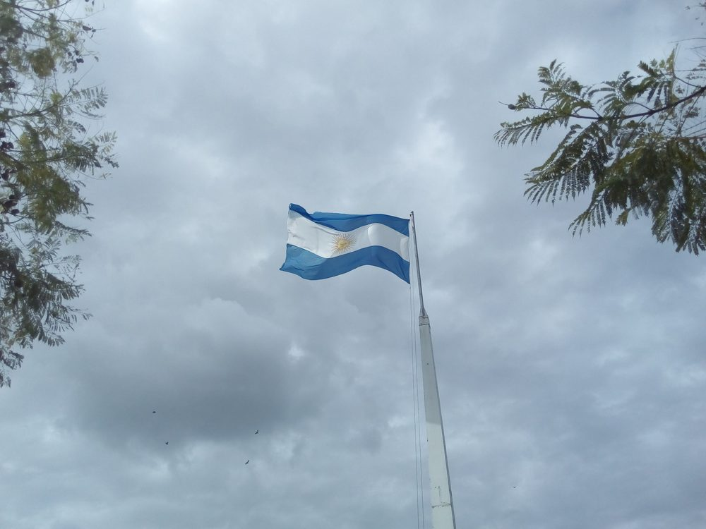
Aáron Chicaval.3 año-Yaminue
Un recorrido en tres momentos: del mapa a la acción
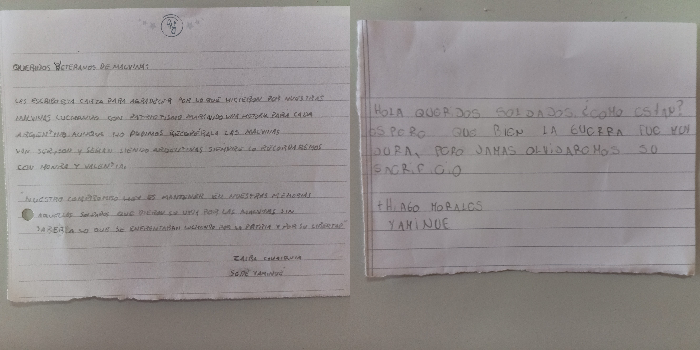
Zaira Guaiquian-2 año-Yaminue
La iniciativa se estructuró a través de un recorrido pedagógico dinámico dividido en tres estaciones conceptuales y prácticas:
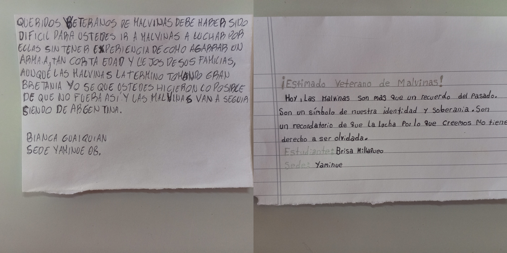
THIAGO MORALES GARCIA-2 AÑO-YAMINUE
¿Cuál es el verdadero tamaño de la Argentina?
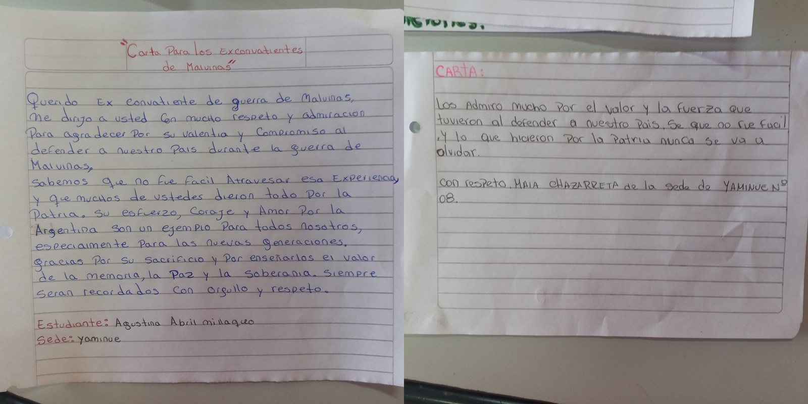
Bianca Guaiquian-4 año-Yaminue
Lugares de la memoria.
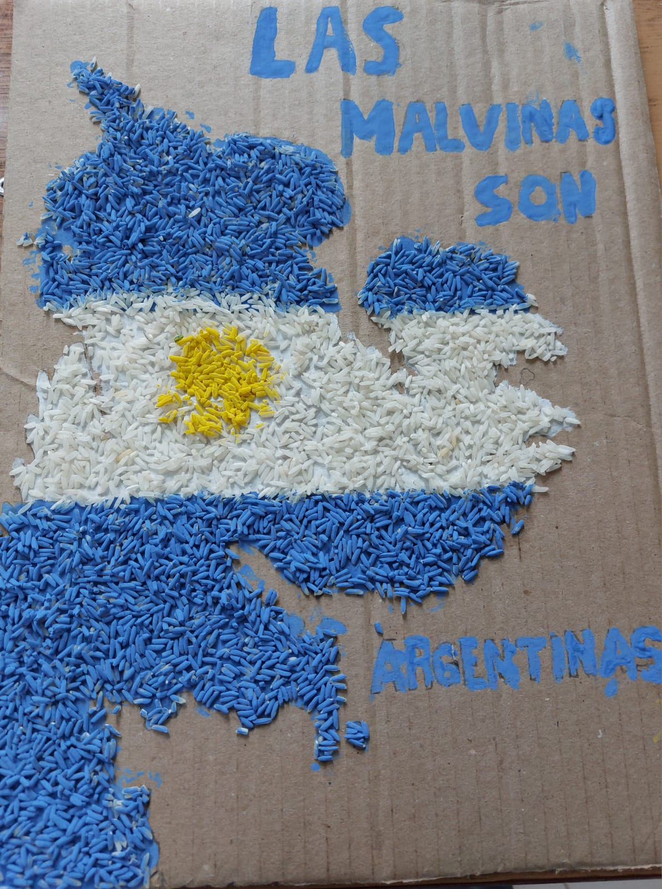
Brisa Millaqueo-2 año-Yaminue
Cartas por la memoria y la soberanía.
Agustina Millaqueo -3 año-Yaminué
Producciones de las y los estudiantes
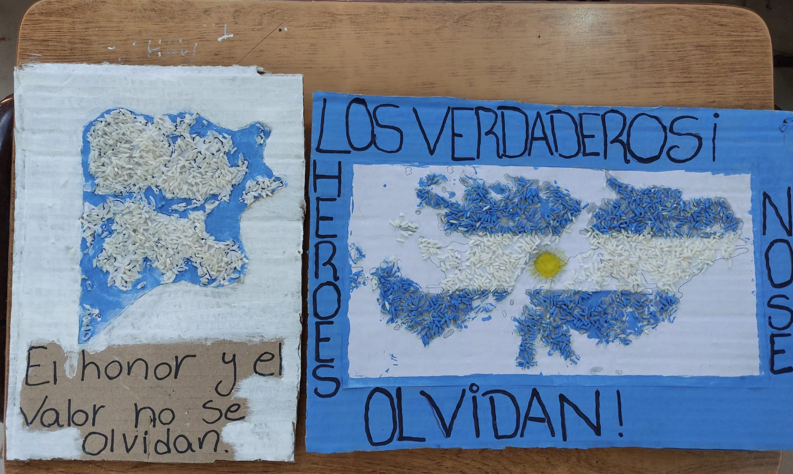
Maia Chazarreta -4 año — Maia Chazarreta -4 año-Yaminue
Las producciones que se comparten a continuación recogen el trabajo de las distintas sedes y grupos: infografías, mapas, mojones, dibujos, cartas y reflexiones elaboradas en el marco de esta propuesta. Se incluyen también las publicaciones textuales del muro colaborativo.
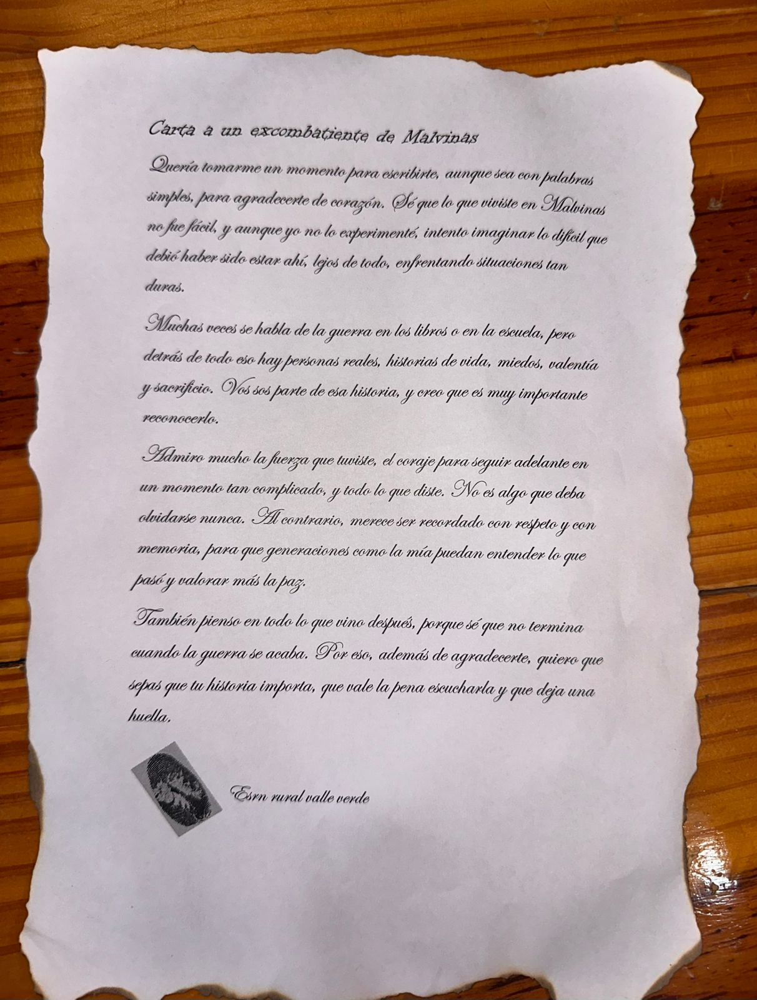
Sede Yaminué — Buen día,realizamos un pequeño mural en el patio de nuestra escuela para conmemorar a los Veteranos y caídos en Malvinas ,en la que debemos nuestra gratitud a quienes fueron a representarnos por la lucha de la soberanía
Ciencia, tecnología y memoria viva
1ro,2do,3ro, 4to y 5to año-Aguada Guzmán. — Estas son algunas de las producciones que hicimos para recordar y valorar a los soldados que lucharon por nuestras islas Malvinas.
Desde el Área de Educación Científica y Tecnológica se destacó que la propuesta buscó trascender el mero efeméride escolar, propiciando un espacio donde las tecnologías digitales, los recursos cartográficos y el pensamiento crítico se unieron para fortalecer nuestra identidad colectiva.
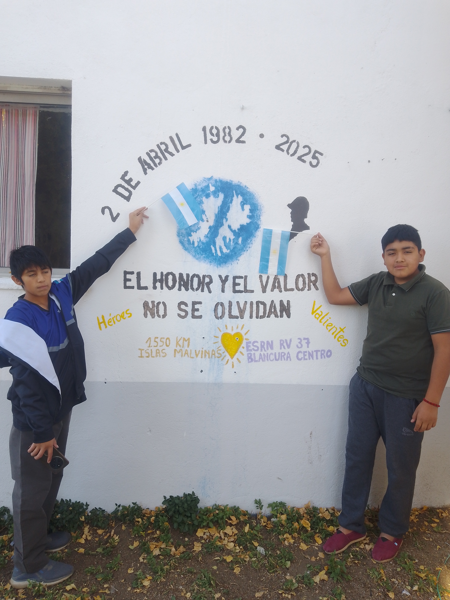
1ro,2do,3ro, 4to y 5to año-Aguada Guzmán. — Estas son algunas de las producciones que hicimos para recordar y valorar a los soldados que lucharon por nuestras islas Malvinas.
Las producciones finales fueron compartidas en un muro digital colaborativo, consolidando un archivo escolar vivo que será puesto a disposición de ces de veteranos. Una muestra clara de que, desde cada rincón de nuestra ruralidad virtual, las Malvinas siguen estando presentes.
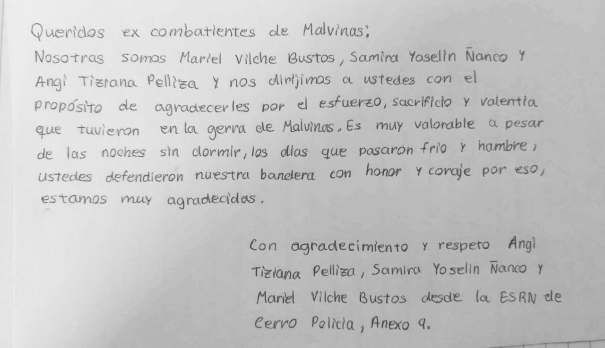
1ro,2do,3ro, 4to y 5to año-Aguada Guzmán. — Estas son algunas de las producciones que hicimos para recordar y valorar a los soldados que lucharon por nuestras islas Malvinas.
Eluney Godoy 2do-Esperanza bustos, Tyago Gutierres 3ro-Ariadna Suazo, Leonel Godoy, Braiton Rocha 4to-Lautaro Godoy, Kiara Mancilla 5to- Sede valle verde A.32 Tercer momento
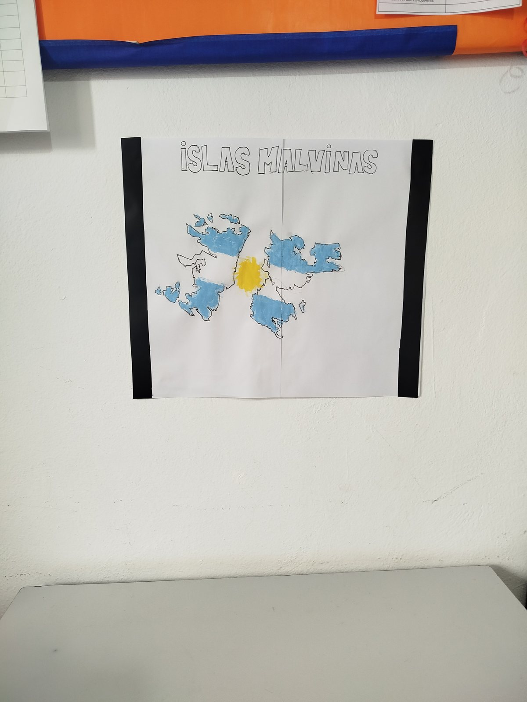
Eluney Godoy 2do- Esperanza bustos,Tyago Gutierres 3ro-Ariadna Suazo, Leonel godoy,Braiton rocha 4to-Lautaro godoy, Kiara mansilla 5to- Sede valle verde A.32 Segundo momentoESRN RV-BLANCURA CENTRO — Juan Cruz Epullan - Joaquin Gallardo
En nuestra escuela, hicimos un pequeño mural como homenaje a nuestros caídos en Malvinas. Todos los años para el 2 de Abril, los homenajeamos agregando alguna frase o dato que sea im
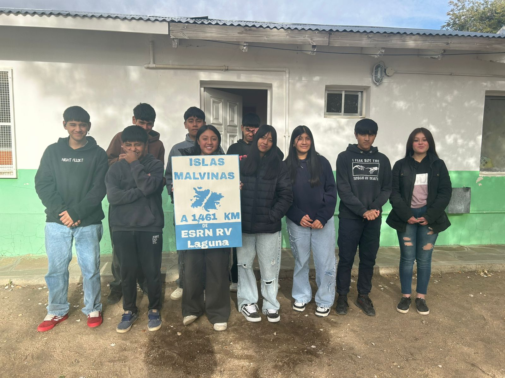
Cerro Policia Estudiantes: Angi Pelliza - Mariel Vilche Bustos - Samira Ñanco — "Carta a nuestros héroes de Malvinas"Cerro Policía Estudiantes: Agustín Criban - Milagros Martiarena - Lucila Pelliza - Keila Pelliza - Lázaro Faria - Yair Navarrete - Lautaro Figueredo — Hola, les compartimos el cuadro que hicimos con piedras pintadas. Este cuadro lo vamos a colgar en una de nuestras aulas como homenaje a nuestros HÉROES de Malvinas.Faustino Vergara 5to año, Anexo N°12 Corralito — Hola, comparto el dibujo que realice de las Islas Malvinas, se encuentra en el aula de la sede y quedara ahí hasta que el tiempo lo decida como homenaje a nuestros héroes que dieron la vida por la Patria.
Saludos!!Sede:Cerro Policia. Estudiantes: Juan cruz Avila, Isaias Raninqueo, Isaias Quiroga, Sofia Achares, Xiomara Soto y Gabriel Parra.